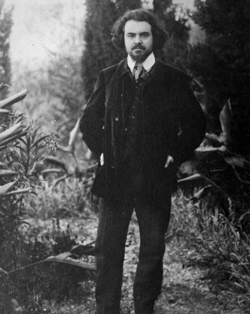

Критики-современники называли искусство Серебряного века декадансом и ругали за настроение упадка, но позже этот период стали называть «русским Ренессансом». Рубеж XIX и XX веков стал временем возрождения отечественной культуры, когда о русском искусстве заговорили во всем мире.
Серебряный век
— название периода в истории русской поэзии, относящегося к концу XIX—началу XX веков, данное по аналогии с Золотым веком (начало XIX века). Серебряный век объединил в себе несколько разнородных течений: символизм1 , футуризм2, акмеизм3, имажинизм4 и другие. Если обратиться к истории, то становится понятно, что то, как годы начала XX века характеризовались бурными изменениями в политике и обществе, не могло не отразится на искусстве. Поэтому этот период отличается смелыми экспериментами, революционными идеями и яркими личностями.
"
"
